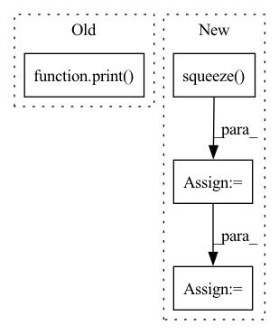

Pattern ID :41186

Before Change
print(average_energy)
print(highest_energy)
print(lowest_energy)
print(std_dev_energy)
print(average_pitch)
print(highest_pitch)
print(lowest_pitch)
print(std_dev_pitch)
After Change
lowest_pitch = pitch[pitch[0] != 0.0].min().unsqueeze(0)
std_dev_pitch = pitch[pitch[0] != 0.0].std().unsqueeze(0)
spk_emb = self.speaker_embedding_func.encode_batch(wavs=norm_wave.unsqueeze(0)).squeeze()
lang_emb = self.language_embedding_func.encode_batch(wavs=norm_wave.unsqueeze(0)).squeeze()
combined_utt_condition = torch.cat([average_energy,
highest_energy,
lowest_energy,
std_dev_energy,
In pattern: SUPERPATTERN
Frequency: 6
Non-data size: 4
Instances
Fragment ID: 116186350
Project Name: digitalphonetics/ims-toucan
Commit Name: 92714ccec18bcb46fcb397bd8fbecc293e9d7066
Time: 2022-01-05
Author: florian.lux@ims.uni-stuttgart.de
File Name: TrainingInterfaces/Text_to_Spectrogram/FastSpeech2/ProsodicConditionExtractor.py
M Class Name: ProsodicConditionExtractor
N Class Name: ProsodicConditionExtractor
M Method Name: extract_condition_from_reference_wave(2)
N Method Name: extract_condition_from_reference_wave(2)
M Parent Class:
N Parent Class:
M File Name: TrainingInterfaces/Text_to_Spectrogram/FastSpeech2/ProsodicConditionExtractor.py
N File Name: TrainingInterfaces/Text_to_Spectrogram/FastSpeech2/ProsodicConditionExtractor.py
M Start Line: 21
M End Line: 37
N Start Line: 32
N End Line: 53
'>
Before Change
fastraster_time_gpu = time.time() - tic
print("Runtimes:")
print(
"Fast Marching: {:.6f} s \nGeodisTk raster: {:.6f} s \nFastGeodis CPU raster: {:.6f} s".format(
fastmarch_time, geodistkraster_time, fastraster_time_cpu
)
)
if device:
print("FastGeodis GPU raster: {:.6f} s".format(fastraster_time_gpu))
After Change
)
tic = time.time()
toivanenraster_output = np.squeeze(
FastGeodis.generalised_geodesic2d_toivanen(input_image_pt, seed_image_pt, v, lamb, iterations).cpu().numpy()
)
toivanenraster_time = time.time() - tic
tic = time.time()
fastraster_output_cpu = np.squeeze(
FastGeodis.generalised_geodesic2d(input_image_pt, seed_image_pt, v, lamb, iterations).cpu().numpy()
)
fastraster_time_cpu = time.time() - tic
device = "cuda" if torch.cuda.is_available() else None
if device:
input_image_pt = input_image_pt.to(device)
seed_image_pt = seed_image_pt.to(device)
tic = time.time()
fastraster_output_gpu = np.squeeze(
FastGeodis.generalised_geodesic2d(input_image_pt, seed_image_pt, v, lamb, iterations).cpu().numpy()
)
fastraster_time_gpu = time.time() - tic
print("Runtimes:")
print(
"Toivanen"s CPU raster: {:.6f} s \nFastGeodis CPU raster: {:.6f} s".format(
toivanenraster_time, fastraster_time_cpu
)
)
if device:
print("FastGeodis GPU raster: {:.6f} s".format(fastraster_time_gpu))
plt.figure(figsize=(18, 6))
plt.subplot(2, 4, 1)
plt.imshow(image, cmap="gray")
plt.autoscale(False)
plt.plot([seed_pos[0]], [seed_pos[1]], "ro")
plt.axis("off")
plt.title("(a) Input image")
plt.subplot(2, 4, 2)
plt.imshow(toivanenraster_output)
plt.axis("off")
plt.title("(b) Toivanen"s Raster (cpu) | ({:.4f} s)".format(toivanenraster_time))
plt.subplot(2, 4, 3)
plt.imshow(fastraster_output_cpu)
plt.axis("off")
plt.title("(c) FastGeodis (cpu) | ({:.4f} s)".format(fastraster_time_cpu))
plt.subplot(2, 4, 6)
plt.imshow(toivanenraster_output)
plt.axis("off")
plt.title("(d) Toivanen"s Raster (cpu) | ({:.4f} s)".format(toivanenraster_time))
if device:
plt.subplot(2, 4, 7)
plt.imshow(fastraster_output_gpu)
plt.axis("off")
plt.title("(e) FastGeodis (gpu) | ({:.4f} s)".format(fastraster_time_gpu))
diff = (
abs(toivanenraster_output - fastraster_output_cpu) / (toivanenraster_output + 1e-7) * 100
)
plt.subplot(2, 4, 4)
'>
Fragment ID: 116186351
Project Name: masadcv/fastgeodis
Commit Name: a1906e989649c1f0b8fdbed147c1d576ac5c41f3
Time: 2022-07-22
Author: muhammad.asad@kcl.ac.uk
File Name: samples/demo2d.py
M Class Name: AnonimousClass
N Class Name: AnonimousClass
M Method Name: evaluate_geodesic_distance2d(2)
N Method Name: evaluate_geodesic_distance2d(2)
M Parent Class:
N Parent Class:
M File Name: samples/demo2d.py
N File Name: samples/demo2d.py
M Start Line: 29
M End Line: 158
N Start Line: 18
N End Line: 100
'>
Before Change
err = np.mean(
np.abs(np.concatenate(coeffs) - torch.cat(coeffs2, -1).squeeze().numpy())
)
print("haar coefficient error scale 2", err, ["ok" if err < 1e-4 else "failed!"])
assert err < 1e-4
def test_conv_fwt_haar_lvl2_odd():
After Change
err = np.mean(np.abs(pywt_coeffs - ptwt_coeffs))
print("haar coefficient error scale 2", err, ["ok" if err < 1e-6 else "failed!"])
assert np.allclose(pywt_coeffs, ptwt_coeffs)
rec = waverec(coeffs2, wavelet).squeeze().numpy()
err = np.mean(np.abs((data - rec)))
print("haar reconstruction error scale 2", err, ["ok" if err < 1e-6 else "failed!"])
assert np.allclose(data, rec)
'>
Fragment ID: 116186346
Project Name: v0lta/pytorch-wavelet-toolbox
Commit Name: c52a0038ca7ceb817da834840a1655d55ff6f1a3
Time: 2021-07-02
Author: moritz@wolter.tech
File Name: tests/test_convolution_fwt.py
M Class Name: AnonimousClass
N Class Name: AnonimousClass
M Method Name: test_conv_fwt_haar_lvl2(0)
N Method Name: test_conv_fwt_haar_lvl2(0)
M Parent Class:
N Parent Class:
M File Name: tests/test_convolution_fwt.py
N File Name: tests/test_convolution_fwt.py
M Start Line: 42
M End Line: 49
N Start Line: 22
N End Line: 56
'>
Before Change
else:
loss=criterion(out, j[-1].cuda())
totalloss += loss*len(j[-1])
print(totalloss)
if task == "classification":
pred.append(torch.argmax(out, 1))
elif task == "multilabel":
pred.append(torch.sigmoid(out).round())
After Change
loss=criterion(out, j[-1].float().cuda())
else:
if len(j[-1].size())>1:
j[-1] = j[-1].squeeze()
loss=criterion(out, j[-1].long().cuda())
totalloss += loss*len(j[-1])
//print(totalloss)
if task == "classification":
'>
Fragment ID: 116186411
Project Name: pliang279/multibench
Commit Name: e854effb566a45ddcf8788685b859e545feb70c0
Time: 2021-05-23
Author: blairc@andrew.cmu.edu
File Name: training_structures/Simple_Late_Fusion.py
M Class Name: AnonimousClass
N Class Name: AnonimousClass
M Method Name: train(16)
N Method Name: train(16)
M Parent Class:
N Parent Class:
M File Name: training_structures/Simple_Late_Fusion.py
N File Name: training_structures/Simple_Late_Fusion.py
M Start Line: 67
M End Line: 105
N Start Line: 55
N End Line: 107
'>
Before Change
cv2.imshow("input", center_img)
print(vid_path)
cv2.waitKey()
//break
After Change
//mask = torch.round(masks)
center_img_salient = rgb_center_img_tensor*mask // 3 channels x 1 frame x H x W
center_img_salient = center_img_salient.squeeze(1)
// Put image values into range [0, 1] and then normalize using
// mean and std for ImageNet
// https://pytorch.org/docs/stable/torchvision/models.html
center_img_salient = tensor_min_max_normalize(center_img_salient)
normalize = transforms.Normalize(mean=[0.485, 0.456, 0.406],
std=[0.229, 0.224, 0.225])
center_img_salient = normalize(center_img_salient)
//print ("Input size", input.size())
//print ("salient", center_img_salient.size())
//print(vid_path)
// Visualize mask region
//center_img = vid_tensor_to_numpy(center_img_salient.unsqueeze(1))[0]
//center_img = cv2.cvtColor(center_img, cv2.COLOR_RGB2BGR)
//center_img = cv_f32_to_u8(center_img)
//cv2.imshow("input", center_img)
//cv2.waitKey()
//// Visual mask
////mask = vid_tensor_to_numpy(input[3].unsqueeze(0))[0]
////print(mask)
////mask = cv2.merge([mask, mask, mask])
center_img_salient = center_img_salient.unsqueeze(0)
if cuda:
center_img_salient = center_img_salient.to(device)
'>
Fragment ID: 116186340
Project Name: rvl-lab-utoronto/video_similarity_search
Commit Name: e5eeb446b18f40a7af123ef6d93ea24c32cc0538
Time: 2020-08-28
Author: salar77h@gmail.com
File Name: clustering/cluster_masks.py
M Class Name: AnonimousClass
N Class Name: AnonimousClass
M Method Name: get_embeddings_mask_regions(3)
N Method Name: get_embeddings_mask_regions(3)
M Parent Class:
N Parent Class:
M File Name: clustering/cluster_masks.py
N File Name: clustering/cluster_masks.py
M Start Line: 46
M End Line: 109
N Start Line: 51
N End Line: 127
'>
Before Change
else:
loss=criterion(out, j[-1].cuda())
totalloss += loss*len(j[-1])
print(totalloss)
if task == "classification":
pred.append(torch.argmax(out, 1))
elif task == "multilabel":
pred.append(torch.sigmoid(out).round())
After Change
loss=criterion(out, j[-1].float().cuda())
else:
if len(j[-1].size())>1:
j[-1] = j[-1].squeeze()
loss=criterion(out, j[-1].long().cuda())
totalloss += loss*len(j[-1])
//print(totalloss)
if task == "classification":
'>
Fragment ID: 116186405
Project Name: pliang279/multibench
Commit Name: 1c128af16e3b49797aee4b1097382015f746c920
Time: 2021-05-23
Author: blairc@andrew.cmu.edu
File Name: training_structures/Simple_Late_Fusion.py
M Class Name: AnonimousClass
N Class Name: AnonimousClass
M Method Name: train(16)
N Method Name: train(16)
M Parent Class:
N Parent Class:
M File Name: training_structures/Simple_Late_Fusion.py
N File Name: training_structures/Simple_Late_Fusion.py
M Start Line: 67
M End Line: 105
N Start Line: 55
N End Line: 107